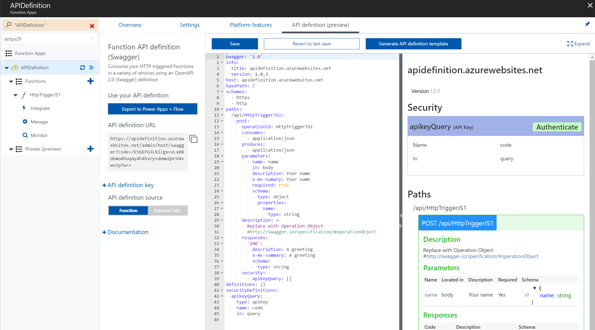

Today we are announcing preview support for editing and hosting OpenAPI 2.0 (Swagger) metadata in Azure Functions. API authoring is a popular application of Functions, and Swagger metadata allows a whole network of Swagger compliant software to easily integrate with those APIs.

We are adding a Swagger template generator to create a quickstart Swagger file from the existing metadata in your HTTP Trigger Functions. You just fill in the
operation objects for each of your HTTP verbs and you’re off!
We host a version of the swagger editor to provide rich inline editing of your Swagger file from within the Function UI. Once you save your Swagger file we’ll host it for you at a url in your Function App's domain.
Head on over to the documentation to learn more
Integrations
These features integrate with the existing Azure App Service API definition support to allow you to consume your API on a variety of 1st party services, including
PowerApps, Flow, and
Logic Apps, as well as the ability to
generate SDKs for your API in Visual Studio.
Creating your first Open API definition
Check out our getting started guide for in-depth instructions
- To create your first OpenAPI (Swagger) definition you must first have a function App with at least one HTTP Trigger Function. Instructions.
- Next head over to the "API Definition (preview)" tab in the lower left hand corner of your Function App.
- Toggle your Swagger source to "Internal." This will enable hosting and inline editing of an OpenAPI definition for this Function App.
- Click "Load Generated API Definition" to populate the Swagger editor with a quickstart OpenAPI definition.
- This definition uses your function.json, represented as the settings in the "Integrate tab," for each Function to populate the definition.
- Add an operation object for the POST operation of your function with the expected type of input.
- For the HTTP Trigger sample code you can use the following Operation object:
- Remove the entries under Paths/api/<yourFunctionName> for every verb except POST. (get, delete, head, etc)
- For the default HTTP Trigger, all HTTP verbs are allowed, so our quickstart will have a blank entry for all 8 possible verbs. We want our definition to only contain the available functionality of our API.
- Test your Swagger definition
- In the right-hand pane of the swagger editor add your API key as Authentication info, click "try this operation," and enter a name to test your Swagger.
Provide Preview Feedback
Try out Swagger support in Functions and let us know how you like it! We are continuing to develop this set of features and would love to know what matters most to you.
If you run into any problems, let us know on the
forums, ask a question on
StackOverFlow, or file an issue on
GitHub. If you have any additional features you would like to see, please let us know on
Uservoice.
{kind=link}